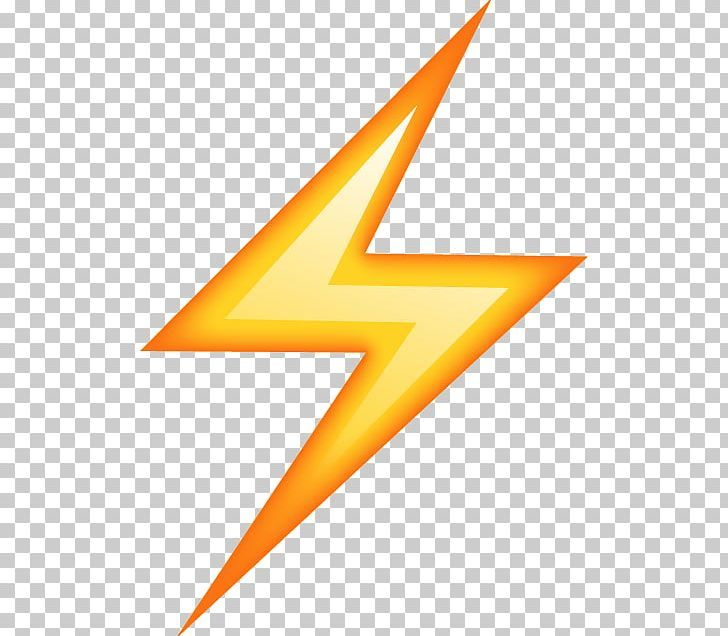
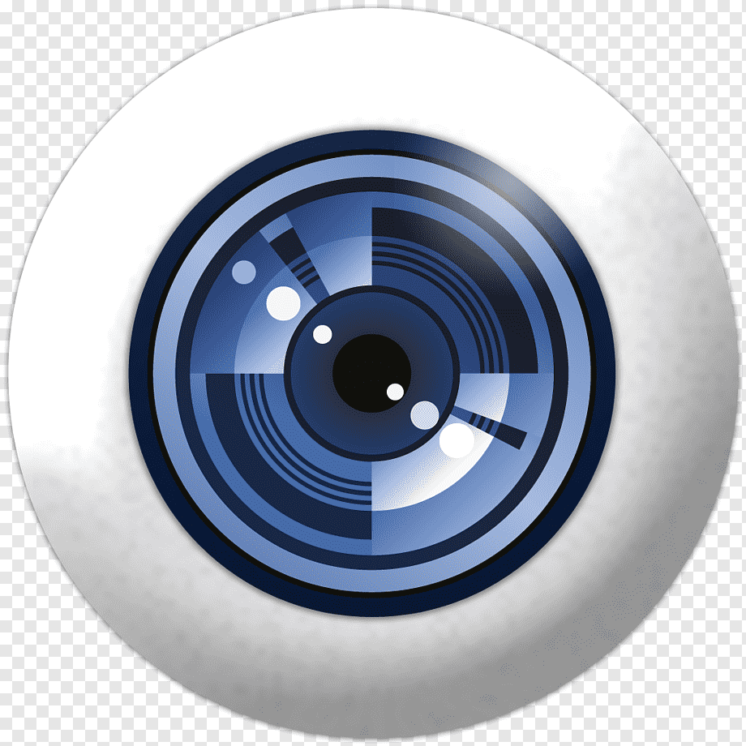
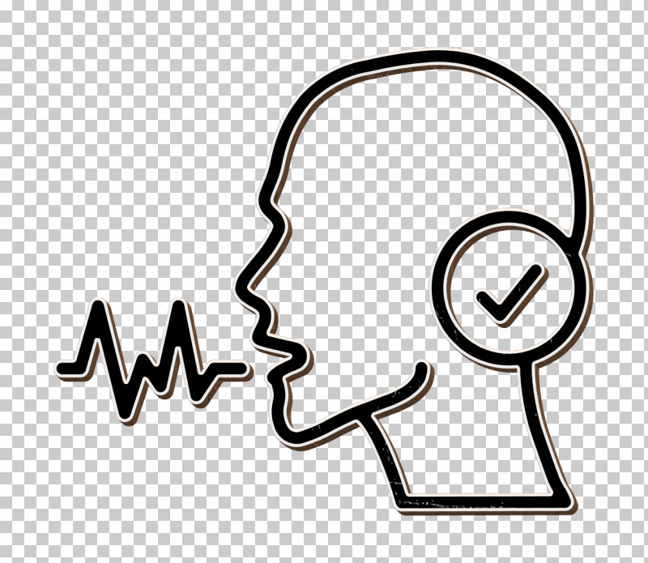

Нейронные сети,
искуcственный интеллект сегодняИсследуйте мир машинного обучения и нейронных сетей- технологий, меняющих нашу реальность.
Что такое нейронные сети?
Архитектура мозга
Нейронные сети имитируют работу человеческого мозга, состоящего из взаимосвязанных нейронов
Обучение на данных
Сети обучаются набольших объемах данных, выявляя сложные закономерности и паттерны

Быстрые решения
Способны обрабатывать информацию и принмать решения за доли секунды
Где применяются нейросети?

Компьютерное зрение
Распознавание изображений, медицинская диагностика, автономные автомобли

Обработка речи
Голосовые помощники, переводчики, транскрибация аудио
Анализ данных
Прогнозирование, рекомендательные системы, финансовый анализ
Как работают нейронные сети?
Сеть получает информацию (изображение, текст, числа) и преобразует ее в числовой формат
Данные проходят через несколько слоев нейронов, каждый из которых извлекает определенные признаки
Сеть корректирует свои веса на основве ошибок, улучшая точность предсказаний
На выходе получаем готовый ответ:классификацию, прогноз или сгенерированный контент
Будущее нейронных сетей
Нейронные сети продолжают развиваться с невероятной скоростью.
В будущем нас ждут еще более умные помощники, точные медицинские
диагнозы, персонализированное образование и революционные открытия в науке.
"Искусственны интеллект -это не замена человеческому разуму, а его мощное расширение"